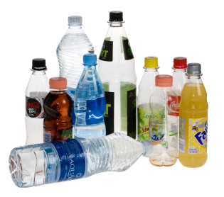
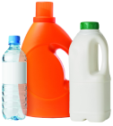
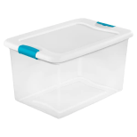

Back to home

What to do with: Plastic
Plastic is very often a tricky thing to recycle. The most
important thing to remember is that the recycling symbol does not always mean you can recycle it in your cart.
Guidelines for that can be found below.

Bottles and Jugs
Ensure that any plastic bottles do not contain substantial
residue from it’s contents, and then recycle the bottle IF it fits the guidelines linked above. Make sure to screw
the cap back on unless the cap is loose and will not fit tightly on the container, in which case it must be put in
the trash.

Tubs (Yogurt or Dairy)
Plastic tubs follow a similar protocol as bottles and jugs,
but they do not contain recyclable lids. Even if the lid fits tightly ensure that you throw it away in the trash
before recycling the container. Rinse if necessary to remove residue.

Cups
Plastic cups are recyclable. If they contain lids, ensure
that the lid follows the guidelines linked above.